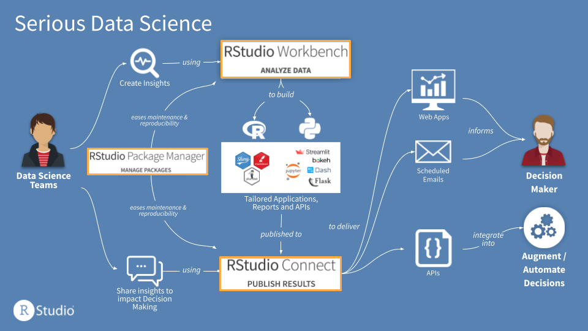

2021-06-15
Data science teams sometimes believe that they must standardize on R or Python for efficiency, at the cost of forcing individual data scientists to give up their preferred, most productive language. RStudio’s professional products provide the best single home for R and Python data science, so teams can optimize the impact their team has, not the language they use.
RStudio’s mission is to create free and open-source software for data science, analytic research, and technical communication. This mission is expressed in our charter as a Public Benefits Corporation, and funded by the revenue from our professional products. These products, such as RStudio Team, enable teams and organizations to scale, secure and operationalize their open source data science.
In working with many different organizations that want to maximize the impact of their data science work, we’ve seen three recurring attributes that contribute to success–which collectively we call Serious Data Science:
RStudio’s professional products deliver a platform on which to centralize, secure and scale your data science, but there are two prominent choices for open source, code-first environments: R and Python. Teams sometimes believe that they must standardize on one or the other for efficiency, at the cost of forcing individual data scientists to give up their preferred, most productive language.
There are a few common myths that we frequently hear from different organizations struggling with the decision of R vs. Python:
While these myths are common, they are nonetheless myths. Advancements in tools in the last few years have made it far easier for a data science team to use both R and Python, side by side.
Video: Recent improvements to Python integrations in the RStudio 1.4 release.
Common infrastructure can support multiple languages and reduce support costs: By using a platform that supports both R and Python, such as RStudio Team, DevOps and IT teams can enable data scientists to use their preferred languages and development environments, while supporting a single infrastructure for both development and deployment. For example, RStudio Workbench (recently renamed from RStudio Server Pro) allows data science teams to use the RStudio IDE, Jupyter or VS Code on the same infrastructure, so data scientists can use their IDE of choice without putting an additional burden on IT.
Optimize your team’s impact, not the language they use: Data science teams are most effective when they are sharing work with their fellow team members and with their key stakeholders, as was discussed in this recent panel webinar with leaders of data science teams. By supporting both languages, teams have access to more tools for distributing work and making an impact. Frameworks like Shiny, Dash, Streamlit, plumber, Flask, and R Markdown allow data scientists to focus on communication regardless of the language they use.

Figure: RStudio Team provides a single infrastructure for data science teams to develop, share and manage their work, whether it is built in R or Python.